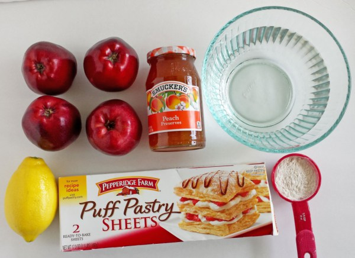

Impress your guests with this beautiful rose-shaped dessert
made with lots of soft and delicious apple slices, wrapped in
sweet and crispy puff pastry

Ingredients
Makes 6 roses
1 frozen puff pastry sheet, thawed
2 red apples
lemon juice from half a lemon
1 tablespoon of flour, to sprinkle the counter
3 tablespoons of peach preserve
cinnamon (optional)
powder sugar for decorating (optional)
Directions
Preparation time: about 20 minutes to prepare, plus 45 minutes to bake
Thaw the puff pastry if you haven't done so yet. It should take about 20-30 minutes.
Prepare a bowl with some water and the lemon juice. Cut the apples in half, remove the core and cut the apples in paper thin slices, as shown in my picture. Leave the peel so it will give the red color to your roses. Right away, place the sliced apples in the bowl with lemon and water, so that they won't change color.
Microwave the apples in the bowl, for about 3 minutes, to make them slightly softer. If you prefer, you can also simmer the apple slices in the water in a small pan (on the stove).
Unwrap the puff pastry over a clean and lightly floured counter. Using a rolling pin stretch the dough a little, trying to keep it in a rectangular shape. Cut the dough in 6 strips. These are about 2 in x 9 in (5 cm x 22 cm).
In a bowl, place three tablespoons of peach preserve with two tablespoons of water. Microwave for about one minute, so that the preserve will be easier to spread. Spread the preserve on the dough.
Preheat the oven to 375 degrees F (190 degrees C). Drain the apples.
Place the apples along the top edge of the dough. Sprinkle with cinnamon if you'd like.
Fold up the bottom part of the dough over the apples.
Carefully roll, seal the edge, and place in a silicone muffin cup. No need to grease the muffin mold if it's silicone. Otherwise, make sure to grease it.
Do the same for all 6 roses. Bake at 375 degrees F (190 degrees C) for about 40-45 minutes, until fully cooked.
NOTE: make sure the pastry is fully cooked on the inside before removing the roses from the oven! If after 30 minutes the apples on top look fully cooked, move the pan to a lower rack in the oven, and wait for 10-15 more minutes to avoid undercooking the puff pastry.